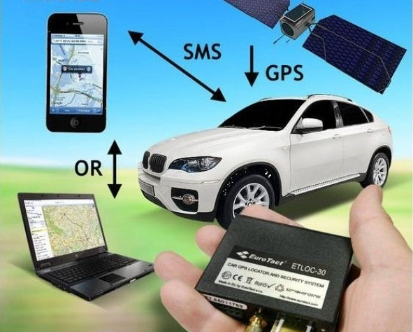
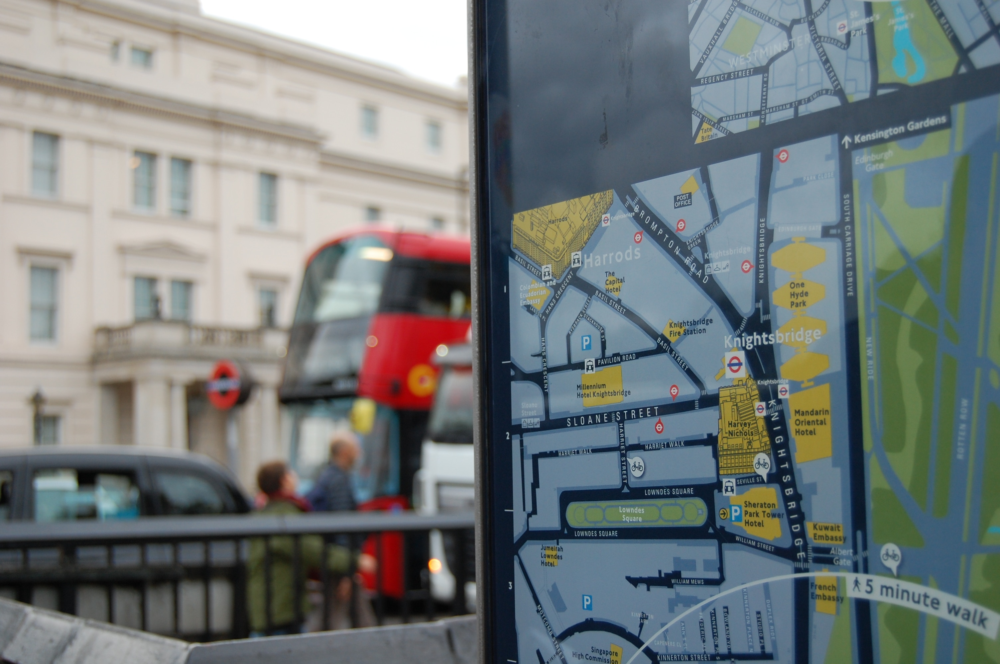
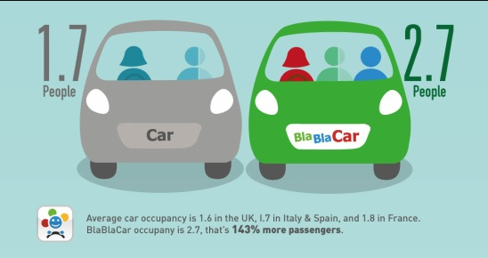
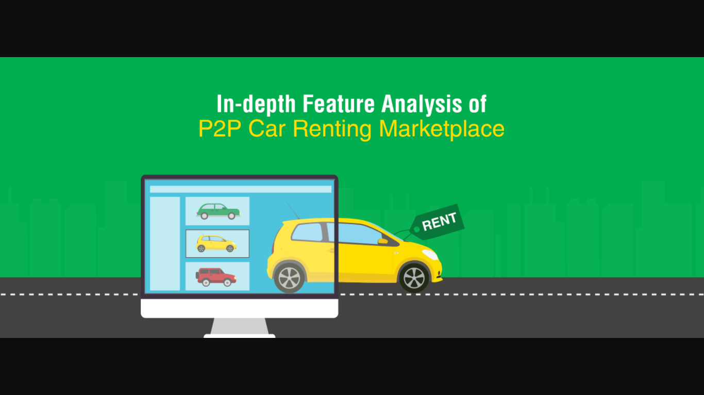
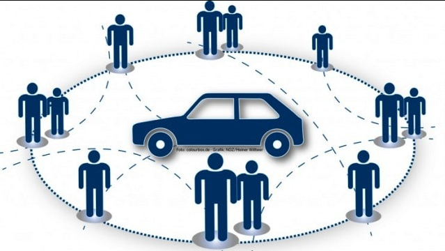
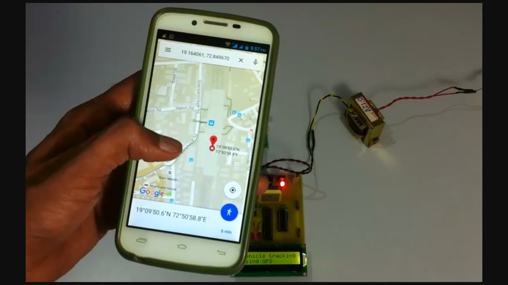
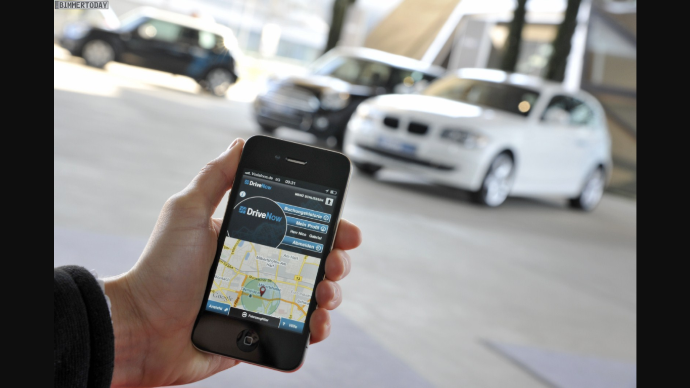
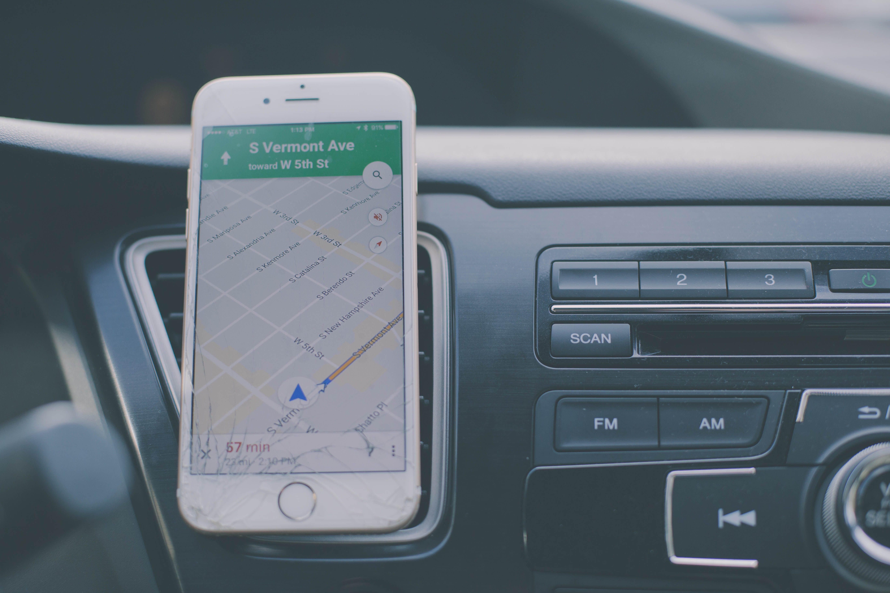
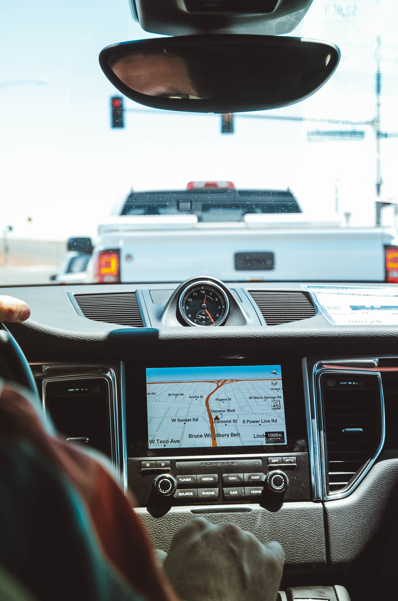

This is a Share Your Journey web application aimed to help people find drivers and passengers sharing the same routes. Share Your Journey among interested parties contributing at the same time to a better ecological and health environment. By Share Your Journey, driver and passengers are reducing the costs and passengers are reducing the time spent on the available transportation networks. This system allows driver to Share Your Journey with the help of our web app. In this app registered user can perform driver or passenger role. A driver can share his routes with the help of our web app after login the application. A passenger can search route and match his route with driver`s source and destination route. If route is matched then passenger sends a request to that driver, after accepting the request passenger can takes journey with driver.








